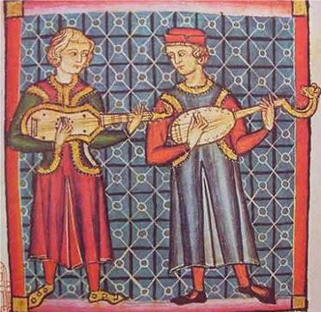

A origem do Violão não é muito clara. Sua história começa há cerca de 2.000 anos a.C.
Na antiga Babilônia, arqueologistas encontraram placas de barro com figuras seminuas tocando instrumentos musicais, muitos deles similares ao violão atual (1900-1800 a.C). Um exame mais detalhado nos mostra que há diferenças significativas no corpo e no braço: Também o fundo é chato, portanto sem relação com o alaúde, de fundo côncavo.
As cordas são pulsadas pela mão direita (para os destros), mas o número de cordas não é claro; em algumas placas, pelo menos duas cordas são visíveis.
Indícios de instrumentos similares ao violão foram encontrados em cidades como Assíria, Susa e Luristan.
No Egito: O único instrumento de cordas pulsadas era a HARPA de formato côncavo que depois foi acrescentada de um braço com trastes cuidadosamente marcados e cordas feitas de tripa animal. Pouco tempo depois estas características se combinariam e evoluíram para um instrumento ainda mais próximo do violão.Em Roma: Surge instrumento totalmente de madeira (30 a.C-400 d.C). O tampo, que antes era de couro cru (semelhante ao banjo) agora é de madeira e possui cinco buracos. É importante frisar que nas catacumbas egípcias foram encontrados instrumentos, com leves curvas características do violão.
O primeiro instrumento de cordas europeu, de origem medieval, data de 300 anos depois de Cristo, e possuía um corpo arredondado que se interligava com um braço de comprimento considerável. Este tipo de instrumento foi utilizado por muitos anos e foi o antepassado provavelmente da Teorba.
Há também a descrição de outro instrumento datado da Dinastia Carolingian, que pode ser de origem tanto alemã como francesa. Este instrumento possuía formato retangular e seu corpo era equivalente ao seu braço.
Em ilustrações pode se observar que na “mão ” do instrumento (de formato arredondado) se encontravam quatro, e às vezes cinco tarraxas de afinação, com um número de cordas equivalente. Este instrumento manteve seu formato e suas definições até o século quatorze.
Paralelamente a este instrumento, outro começou a se desenvolver. Possuía leves curvas nas laterais do corpo tornando-o mais anatômico e confortável. Descrições deste instrumento foram encontradas em catedrais inglesas, espanholas e francesas datadas do fim do século quatorze.
É importante frisar que haviam distinções, como a guitarra Latina e a guitarra Morisca. A guitarra Morisca, como o nome indica, tinha origem Moura, devido a colonização da Espanha e da África do Norte.
Este instrumento possuía um corpo oval e o tampo possuía vários furos ornamentados chamados de Rosetas. Era totalmente remanescente do Alaúde, e dentro deste conceito uma série de outros modelos, com diferentes números de cordas também existiam.
Já a guitarra Latina, tinha as curvas nas laterais do corpo que marcariam o desenho já quase definitivo do instrumento. A guitarra latina (assim como a Morisca) tinham muita popularidade na Europa Medieval.
Essa popularidade se devia principalmente a presença dos “Trovadores”, músicos de natureza nômade que com suas performances e constantes viagens enriqueceram a cultura europeia, e impulsionaram a popularidade e reconhecimento do instrumento.
Até a Idade Média as informações sobre a guitarra eram obtidas de maneira indireta na sua maioria, através de afrescos, pinturas e pequenas anotações da época.
A partir do período Barroco, as informações sobre instrumentos em geral e sobre música são muito mais claras e precisas.
Há duas hipóteses mais aceitas atualmente, e que Emílio Pujol cita na sua conferência em Paris, no dia 9 de novembro de 1928, intitulada “La guitarra y su História”:
Primeira hipótese para a origem do violão
O violão seria derivado da chamada Khetara grega, que com o domínio do Império Romano, passou a se chamar Cítara romana. Era também denominada de Fidícula.
Teria chegado à península Ibérica por volta do século I d.C. com os romanos; este instrumento se assemelhava à Lira e, posteriormente foram acontecendo as seguintes transformações: os seus braços dispostos na forma da lira, foram se unindo, formando uma caixa de ressonância, à qual foi acrescentada um braço de três cravelhas e três cordas
A esse braço foram feitas divisões transversais (trastes), para que se pudesse obter várias notas de uma mesma corda, a ser tocado na posição horizontal. Assim, ficam estabelecidas as principais características do Violão.
Segunda hipótese para a origem do violão
O violão seria derivado do antigo Alaúde Árabe que foi levado para a península Ibérica através das invasões muçulmanas, sob o comando de Tariz, por volta dos anos 711 – 718.
O Alaúde Árabe que penetrou na península na época das invasões, foi um instrumento que se adaptou perfeitamente às atividades culturais da época e, em pouco tempo, fazia parte das atividades da corte.
Esse instrumento musical era conhecido desde o século VIII, tanto o de origem grega, como o Alaúde Árabe, e viveram mutuamente na Espanha.
Isso se pode comprovar pelas descrições feitas no século XIII, por Afonso, o sábio, rei de Castela, e Leão (1221-1284), que era um trovador e escreveu célebres cantigas através das ilustrações descritas nas cantigas de Santa Maria. E assim pôde-se comprovar que no século XIII existiram dois instrumentos distintos, convivendo juntos.
O primeiro era chamado de Guitarra Mourisca e era derivado do Alaúde Árabe. Este instrumento possuía três pares de cordas e era tocado com um plectro (espécie de palheta); possuía um som ruidoso.
O outro era chamado de Guitarra Latina, derivado da Khetara Grega. Ele tinha o formato de oito, com incrustações laterais, o fundo era plano e possuía quatro pares de cordas. Era tocado com os dedos e seu som era suave, sendo que o primeiro estava nas mãos de um instrumentista árabe e o segundo, de um instrumentista romano.
Isso mostra claramente as origens bem distintas dos instrumentos, uma árabe e a outra grega; que coexistiram nessa época na Espanha.
Vemos, portanto, como a origem do Violão e sua evolução estiveram intimamente ligadas à Espanha e a sua história.
Deseja receber nosso pacote completo para o curso de violão? então não perca tempo cadastre-se.
Comentários
Top Marcas